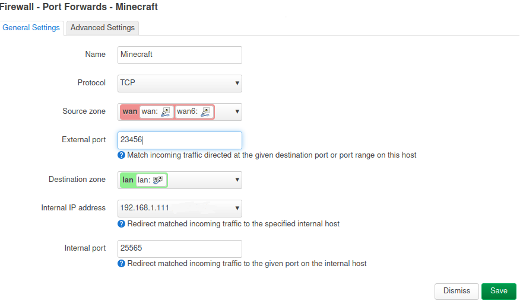
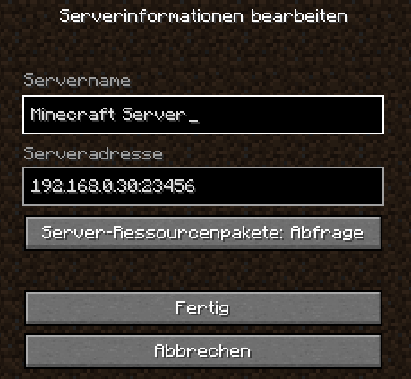

Minecraft kann zwar nicht auf einem Raspberry Pi gespielt werden, aber ein Minecraft Server kann mit einem Raspberry Pi 4 oder 5 betrieben werden. Dank eines verfügbaren Bash-Script ist die Einrichtung keine Hexenwerk.
Grundsätzliches
Minecraft ist besonders bei kleinen Kindern aber auch bei Erwachsenen ein beliebtes Computerspiel. Wenn mehrere Leute öfter gemeinsam Spielen wollen, so macht es Sinn einen Minecraft Server zu betreiben. Diese Aufgabe kann von einem Raspberry Pi 4 oder 5 der mit ausreichend RAM ausgestattet ist, erledigt werden. Möglich wäre ab 2 GB aber optimal ist 4 GB oder mehr.
Von TheRemote gibt es ein Bash-Script das die Installation sehr vereinfacht.
Im Übrigend kann die Anleitung auch auf anderen Systemen mit AMD64-Architektur angewendet werden. Diese müssen nur auf einem Debian System (z. B. Debian 12 Bookworm) basieren. Man könnte z. B. einen ThinClient HP T630 oder Lenovo M600 mit einem 4-Kern Prozessor verwenden.
Mit der eigenen Server Hardware kann man auch noch viele Server Mods bzw. Plugins für noch mehr Spielspaß aktivieren!
Basis Installation und Einrichtung Raspberry Pi
Als Basis für den Server wird ein Raspberry Pi OS Lite 32-Bit oder 64-Bit verwendet.
Folgende Schritte müssen initial durchgeführt werden:
- Raspberry Pi OS Lite herunterladen und auf eine schnelle MicroSD Karte mit min. 8GB schreiben
- In der Boot Partition die Datei ssh erzeugen (bzw. ssh beim MicroSD Karte schreiben aktivieren)
- Login mit Benutzer “pi” und Passwort “raspberry” (per SSH) bzw. “raspberrz” (lokal)
- Updates installieren:
sudo apt-get update && sudo apt-get -y upgrade - Lokalisierungseinstellungen (Sprache, Zeitzone usw.) mit
sudo rasp-configeinstellen
Es empfiehlt sich das Programm Raspberry Pi Imager von https://www.raspberrypi.com/software/ zu verwenden. Damit können die wichtigsten Parameter bereits vor dem Schreiben des Images eingestellt werden und man erspart sich so die komplizierte nachträgliche Einrichtung. Die wichtigsten Voreinstellungen sind:
- Servername
- Passwort (sollte geändert werden)
- SSH-Dienst aktivieren
- Evtl. WiFi Parameter einstellen (LAN ist aber zu bevorzugen)
Nach dem ersten Start braucht man dann nur noch die letzten Updates zu installieren.
Basis Installation und Einrichtung AMD64 System
Zuerst muss Debian 12 über einen Boot-Stick installiert werden. Dazu lädt man sich zuerst das Programm Ventoy herunter und erzeugt den Boot-Stick. Dann kopiert man sich das Debian Network Install ISO von https://www.debian.org/CD/netinst/ auf den USB- Stick.
Wenn das Debian System bootet und der SSH-Server installiert ist, kann man sich mit einem SSH-Client (Windows: Putty) verbinden.
Nun sollte man noch das sudo-System aktivieren und einen “minecraft” User anlegen. Dann verhält sich das System so wie bei einem Raspberry Pi.
su --login
apt install sudo
adduser minecraft
adduser minecraft sudo
Auch den Default User, der bei der Installtion angelegt wurde, kann man zu Administrator bzw. sudo hinzufügen.
adduser defaultuser sudo
Nun meldet man sich als Benutzer “minecraft” an, damit man die Minecraft-Server installation starten kann. Das kann entweder um einen neuen SSH-Client passieren oder über den befehl su minecraft.
MicroSD/SSD Benchmark
Die Geschwindigkeit der MicroSD-Karte ist von entscheidender Bedeutung für den Minecraft Server. Mit einem Benchmark vom Autor, kann die Karte überprüft werden.
sudo wget https://raw.githubusercontent.com/TheRemote/PiBenchmarks/master/Storage.sh | sudo bash
SanDisk Ultra:
Category Test Result
HDParm Disk Read 26.34 MB/s
HDParm Cached Disk Read 10.20 MB/s
DD Disk Write 16.3 MB/s
FIO 4k random read 2352 IOPS (9410 KB/s)
FIO 4k random write 207 IOPS (829 KB/s)
IOZone 4k read 7155 KB/s
IOZone 4k write 1684 KB/s
IOZone 4k random read 7004 KB/s
IOZone 4k random write 922 KB/s
Score: 742
SanDisk High Endurance:
Category Test Result
HDParm Disk Read 73.14 MB/sec
HDParm Cached Disk Read 54.27 MB/sec
DD Disk Write 54.8 MB/s
FIO 4k random read 2538 IOPS (10154 KB/s)
FIO 4k random write 804 IOPS (3216 KB/s)
IOZone 4k read 10258 KB/s
IOZone 4k write 2304 KB/s
IOZone 4k random read 7863 KB/s
IOZone 4k random write 3619 KB/s
Score: 1545
HP T630 Thin Client internal MMC:
Category Test Result
HDParm Disk Read 145.25 MB/sec
HDParm Cached Disk Read 109.22 MB/sec
DD Disk Write 24.0 MB/s
FIO 4k random read 13931 IOPS (55727 KB/s)
FIO 4k random write 4777 IOPS (19108 KB/s)
IOZone 4k read 56593 KB/s
IOZone 4k write 15330 KB/s
IOZone 4k random read 34702 KB/s
IOZone 4k random write 16821 KB/s
Score: 5070
Laut Autor wäre ein “Score” von 1000 wünschenswert. Unter 700 sollte er nicht sein, dann sollte man auf eine USB SSD ausweichen.
Eine SanDisk Ultra microSDHC 8 GB Class 10 Karte liegt am unteren Grenzwert, reicht also gerade so.
Eine SanDisk High Endurance 64 GB Class 10 Karte errreicht schon gute 1545.
Eine SSD erreicht im übrigen einen Wert von über 5000! Sie erreicht im IOZone 4K read und write also circa 20-25 MB/s. Andere SATA oder NVMe Systeme schaffen es bis um die 100 MB/s. Vergleichswerte findet man auf https://pibenchmarks.com/.
Minecraft Server Installation
wget https://raw.githubusercontent.com/TheRemote/RaspberryPiMinecraft/master/SetupMinecraft.sh
Bevor man die Installation startet, kann man noch vorgeben welche Version installiert werden soll. Dazu editiert man die “SetupMinecraft.sh” Datei und gibt in der Zeile 7 die Versionsnummer an. Aber Achtung die Version muss von Paper Minecraft unterstützt werden. Mit einem Browser kann man die Projektseite öffnen https://papermc.io/downloads/paper und nachsehen. Im aktuellen Fall ist die neueste stabile Version 1.21.4. Wir können sie ins Setup-Script eintragen..
cat SetupMinecraft.sh | grep Version=
Version="1.21.4"
Dann kann das Setup gestartet werden.
bash SetupMinecraft.sh
Nun muss man y gefolgt von der Eingabetaste drücken, damit später Java 16 (OpenJDK) installiert werden kann. Java 16 ist seit der Version 1.17 von Minecraft zwingend erforderlich. Nach einem automatischen Neustart muss das Setup neu gestartet werden.
bash SetupMinecraft.sh
Enter root directory path to install Minecraft server. Almost nobody should change this unless you're installing to a different disk altogether. (default ~):
Directory Path:
Directory Path : /home/pi -- accept (y/n)?
Den Standardpfad (Home Directory) kann man mit der Eingabetaste bestätigen. Bei der Nachfrage, bei dem der Pfad ausgegeben wird, kann man y gefolgt von der Eingabetaste drücken.
Creating minecraft server directory...
Installing OpenJDK...
OpenJDK installation completed.
Getting total system memory...
Nun wird gefragt wieviel Arbeits-Speicher dem Minecraft Prozess zugeordnet werden soll. Je nach System wird ein empfohlener Wert vorgeschlagen: Minimal sind 600 MB. Bei einem 32-Bit Prozess sind maximal 2700 MB möglich. Man sollte 2200 oder 2400 eingeben (2700 führte im Test zu Abstürzen). Bei 64-Bit können es auch 3000 sein. Danach muss man auf Enter drücken.
64-Bit:
Total memory: 4044 - Available Memory: 3453
Please enter the amount of memory you want to dedicate to the server. A minimum of 700MB is recommended.
You must leave enough left over memory for the operating system to run background processes.
If all memory is exhausted the Minecraft server will either crash or force background processes into the paging file (very slow).
INFO: You are running a 64-bit architecture, which means you can use more than 2700MB of RAM for the Minecraft server.
Enter amount of memory in megabytes to dedicate to the Minecraft server (recommended: 3053):
32-Bit:
Warning: You are running a 32 bit operating system which has a hard limit of 3 GB of memory per process
You must also leave behind some room for the Java VM process overhead. It is not recommended to exceed 2700 and if you experience crashes you may need to reduce it further.
You can remove this limit by using a 64 bit Raspberry Pi Linux distribution (aarch64/arm64) like Ubuntu, Debian, etc.
Total memory: 3839 - Available Memory: 2700
Please enter the amount of memory you want to dedicate to the server. A minimum of 700MB is recommended.
You must leave enough left over memory for the operating system to run background processes.
If all memory is exhausted the Minecraft server will either crash or force background processes into the paging file (very slow).
Enter amount of memory in megabytes to dedicate to the Minecraft server (recommended: 2400):
Nach der Installtion muss man noch weitere Parameter einstellen:
Enter a name for your server...
Server Name:
Nun muss man den Servernamen eingeben. In dem Beispiel wählen wird “GC2”.
Minecraft can automatically start at boot if you wish.
Start Minecraft server at startup automatically (y/n)?
Nun kann man angeben ob der Minecraft Server nach einem Systemstart automatisch gestartet wird. Dies beantworten wir mit Ja, indem wir zuerst y drücken und dann die Enter-Taste.
Your time zone is currently set to Europe/Vienna. Current system time: SSun 26 Dec 13:11:02 CET 2021
You can adjust/remove the selected reboot time later by typing crontab -e
Automatically reboot Pi and update server at 4am daily (y/n)?
Nun wird gefragt ob der Server täglich um 4 Uhr früh neu gestartet werden soll. In dem Fall werden täglich Einstellungen gespeichert, Backups erstellt und eventuelle Updates installiert. Dennoch macht es für mich keinen Sinn einen Server komplett neu zu starten. Darum würde ich hier nur dazu raten, wenn das System dezitiert als Minecraft Server genutzt wird und keine durchgehender Betrieb benötigt wird. Zur Aktivierung dieser Option drückt man also y. Ich wähle hier aber n damit kein nächtlicher Neustart ausgeführt wird. Danach muss man die Enter-Taste drücken.
Nach der Installation wird der Minecraft Server automatisch gestartet.
Um die Serverausgaben bzw. den Termial ansehen zu können muss man screen starten.
screen -r
[18:34:07 INFO]: Done (42.606s)! For help, type "help"
[18:34:07 INFO]: ***********************************************************************
[18:34:07 INFO]: This is the first time you're starting this server.
[18:34:07 INFO]: It's recommended you read our 'Getting Started' documentation for guidance.
[18:34:07 INFO]: View this and more helpful information here: https://docs.papermc.io/paper/next-steps
[18:34:07 INFO]: ***********************************************************************
In diesem Fall dauerte das Anstarten einige Sekunden. Die CPU-Last ist zeitweise auf allen Kernen sehr hoch, später pendelt es sich aber nach einigen Minuten auf einem niedrigeren Niveau von ca. 40 % auf einem Core (1500 MHz) ein. Der Speicherverbrauch ist wie eingestellt auf ca. 2,2 GB (47 %). Diese Daten wurden mit top bzw. htop ermittelt.
Start Probleme
Sollte der Server nicht laufen, kann man den Status mit sudo service minecraft status prüfen. Wenn beim Starten des Programms einen Fehler auftritt, muss man es manuell in der Konsole starten um ihn diagnostizieren zu können.
In der Datei “start.sh” kann man den Startsyntax finden: cat start.sh | grep java
screen -dmS minecraft /home/pi/minecraft/jre/bin/java -DPaper.IgnoreJavaVersion=true -jar -Xms400M -Xmx2400M /home/pi/minecraft/paperclip.jar
Starten man nun den Aufruf, so erhält man möglicherweise eine Fehlermeldung wie z. B.:
Error occurred during initialization of VM
Can not represent all cards in the heap with card region/card within region. Heap 2306867200B (4294967295 bits) Remembered set covers 53 bits.: Decrease heap size.
In dem Fall muss man den maximalen Speicher reduzieren z. B. auf 2000 MB. Dazu ändert man einfach in der Datei “start.sh” den Parameter “-Xmx2400M” auf “-Xmx2000M”.
Nun kann man den Server neu starten sudo service minecraft restart.
Minecraft Verbindung
Nun kann man sich im lokalen Netzwerk in Minecraft bereits mit dem Server Verbinden.
Dazu geht man auf die Schaltfläche Multiplayer und dann auf Add Server.
Nun kann man einen beliebigen Server Namen vergeben. Darunter muss man die IP-Adresse bzw. den Namen des Servers (mit dem er erreichbar ist) eingeben und mit Doppelpunkt getrennt den Standard-Port 25565.
Server Name: Mein Minecraft Server
Server Adresse: 192.168.1.111:25565
Nun ist der Server in der Liste und man kann durch Drücken des blauen Pfeils die Verbindung aufbauen.
Minecraft Server Einstellungen und Optimierungen
Alle wichtigen Einstellungen für den Server sind in der Datei “server.properties” gespeichert. Für den Port auf dem der Minecraft Server verfügbar ist, gilt der Parameter “server-port”. Er ist auf den Standardwert 25565 (Java-Version) gesetzt. Informationen rund um die Einstellungen können der deutschen Minecraft Gamepedia Seite Server.properties entnommen werden.
Man könnte z.B. noch den Schwierigkeitsgrad von Einfach/easy auf Normal/normal setzen. Weiters könnte man auch die Anzahl der gleichzeitigen Player reduzieren.
difficulty=normal
max-players=8
network-compression-threshold=512
simulation-distance=4
sync-chunk-writes=false
view-distance=7
Icon und Message of the Day (MOTD)
Damit der Server eine schönen Icon bekommt muss man lediglich eine 64x64 Pixel PNG-Datei in das Serververzeichnis kopieren. Die Datei muss den Namen “server-icon.png” haben.
Eine schönen Text mit verschiedenen Farben neben dem Bild kann man auch konfiguieren. Dazu entwirft man ihn zuerst auf der Webseite https://minecraft.tools/en/motd.php .
Dann muss man nur auf die Schaltfläche “CREATE THE MOTD” drücken.
Den erzeugten Text kann man einfach kopieren und in die “server.properties” Datei bei der Einstellung “motd=” einfügen.
Nach einem Neustart des Server sudo service minecraft restart werden die Einstellungen aktiv.
Spieler mit Operator-Rechten ausstatten
Damit man einen Spieler zum Operator machen kann, muss man zur Server-Konsole wechseln. Dies erfolgt durch den Aufruf von screen -r minecraft.
Dort findet man z. B. diesen Eintrag
[17:55:55 INFO]: UUID of player Donald is b47637a4-2f8a-4a47-b43c-c9f32b3c227b
[17:56:00 INFO]: Donald joined the game
[17:56:00 INFO]: Donald[/192.168.0.31:63565] logged in with entity id 1 at ([world]-1274.5, 64.0, -199.5)
Nun git man den Befehl op mit dem Spielernamen als Parameter an, also op Donald
Nun kann man ‘screen’ mit der Tastenkombination Strg+A und D verlassen.
In der Datei ops.json sind die Operatoren gespeichert.
[
{
"uuid": "b47637a4-2f8a-4a47-b43c-c9f32b3c227b",
"name": "Donald",
"level": 4,
"bypassesPlayerLimit": false
},
{
"uuid": "ef341a25-c803-4068-8f00-9bfc4b862eb2",
"name": "Daisy",
"level": 4,
"bypassesPlayerLimit": false
}
]
Server Plugins/Mods
Um Server Plugins/Mods zu installieren muss man lediglich die entsprechenden Version herunterladen und in das “plugins” Verzeichnis kopieren. Bei https://modrinth.com/plugins muss man beim Download die Platform und Minceraft-Version auswählen. Die benötigte Platform ist in unserem Fall “Paper”. Mit dem Downlload-Link kann man auch direkt am Server den Download starten.
cd ~/minecraft/plugins
wget https://cdn.modrinth.com/data/9eGKb6K1/versions/KuMfGuTv/voicechat-bukkit-2.5.26.jar
sudo service minecraft restart
Wenn der Mod Konfigurationsdaten oder ähnliches hat, liegen diese in einem Unterverzeichnis im “plugins” Verzeichnis z. B. “~/minecraft/plugins/voicechat”.
Einige interessant Server Plugins/Mods für den Server sind:
- Simple Voice Chat: https://modrinth.com/plugin/simple-voice-chat
- Multiverse-Core: https://modrinth.com/plugin/multiverse-core
- LuckPerms: https://modrinth.com/plugin/luckperms
- PlayerKits 2: https://modrinth.com/plugin/playerkits-2
- Maintenance: https://modrinth.com/plugin/maintenance
- TAB: https://modrinth.com/plugin/tab-was-taken
- RTP Plugin: https://modrinth.com/plugin/rtp-plugin
- LifeSteal: https://modrinth.com/plugin/lifesteal-system
- Veinminer: https://modrinth.com/datapack/veinminer
- Veinminer Enchantment: https://modrinth.com/datapack/veinminer-enchantment
- HuskHomes: https://modrinth.com/plugin/huskhomes
Minecraft Server Update
Zuerst beendet man den Server mit sudo service minecraft stop.
Bei einem Update geht man eigentlich gleich vor wie bei einer Erstinstallation. Man wechselt in den Minecraft Folder mit cd ~/minecraft, Man lädt sich das Setup herunter wget https://raw.githubusercontent.com/TheRemote/RaspberryPiMinecraft/master/SetupMinecraft.sh.
Nun kann man das Setup mit bash SetupMinecraft.sh starten.
Fall ein Update nicht funktioniert kann man es auch manuell herunterladen:
curl -o paperclip.jar https://fill-data.papermc.io/v1/objects/37b7ca967d81ba06ccb7986efc7f41b9faaaca1e06b351b8b3da102d35f9574e/paper-1.21.8-6.jar
In der start.sh Datei muss aber auch die entsprechende Version eingetragen sein.
Aber Achtung durch das Update kann es sein, dass die Plug-Ins aktualisiert werden müssen.
Nun kann man den aktualisierten Server wieder starten, dazu gibt man sudo service minecraft start ein.
Karten wiederherstellen
Sollte man breits Karten aus einem Backup oder einer anderen Quelle haben, so können diese am Server eingespielt werden.
Backup Inhalt auflisten:
tar -tvf backups/2021.01.03_04.00.39.tar.gz
Minecraft Welten von Backup wiederherstellen:
sudo service minecraft stop
cd ~/minecraft/
rm -r world world_nether/ world_the_end/
ls backups/
tar xvf backups/2022.11.05.10.11.28.tar.gz ./world/ ./world_nether/ ./world_the_end/
sudo service minecraft start
Backup mit restic statt gzip
Bei jedem Start des Servers wird ein komplettes Backup erstellt. Das benötigt unnötig viel Speicherplatz. Mit dem Programm “restic” können inkrementale Backups erzeugt werden, die also nur jeweils die Änderungen sichert.
sudo apt install restic
cd ~/minecraft
restic init -r backups/restic
Nun muss ein Passwort für das Backup vergeben werden. Wir nehmen hier “minecraft” da es nicht so wichtig für uns ist. Wir schreiben das nun auch in eine Passwort-Datei die später referenziert wird.
echo minecraft > restic_pw
Nun kann man die Erzeugung des Backups in einem Trockenlauf testen.
restic -r backups/restic backup --exclude=libraries --exclude=backups --exclude=cache --exclude=logs --exclude=jre --exclude=paperclip.jar --dry-run -vv --password-file restic_pw ./
Dann müssen wir den Aufruf für das Backup bei Script “start.sh” erweitern, sodass restic verwendet wird.
# Back up server
if [ -d "world" ]; then
if [ -n "$(which restic)" ]; then
echo "Backing up server to minecraft/backups/restic folder with restic"
restic -r backups/restic backup --exclude=libraries --exclude=backups --exclude=cache --exclude=logs --exclude=jre --exclude=paperclip.jar --password-file restic_pw ./
elif [ -n "$(which pigz)" ]; then
echo "Backing up server (all cores) to cd minecraft/backups folder"
tar -I pigz --exclude='./backups' --exclude='./cache' --exclude='./logs' --exclude='./jre' --exclude='./paperclip.jar' -pvcf backups/$(date +%Y.%m.%d.%H.%M.%S).tar.gz ./*
else
echo "Backing up server (single core, pigz not found) to cd minecraft/backups folder"
tar --exclude='./backups' --exclude='./cache' --exclude='./logs' --exclude='./jre' --exclude='./paperclip.jar' -pzvcf backups/$(date +%Y.%m.%d.%H.%M.%S).tar.gz ./*
fi
fi
Erzeugten Backup auflisten:
restic -r backups/restic/ snapshots --password-file restic_pw
repository a3a24439 opened (repository version 2) successfully, password is correct
ID Time Host Tags Paths
--------------------------------------------------------------------------------
3a4e6d9b 2025-05-30 19:17:39 minecraft /home/minecraft/minecraft
5a95a71a 2025-05-31 11:43:34 minecraft /home/minecraft/minecraft
4d4d8ee8 2025-06-01 11:14:36 minecraft /home/minecraft/minecraft
a1800b6b 2025-06-04 17:49:12 minecraft /home/minecraft/minecraft
0e72cff1 2025-06-07 09:48:39 minecraft /home/minecraft/minecraft
--------------------------------------------------------------------------------
5 snapshots
Geänderte Dateien von einem Backups auflisten:
restic -r backups/restic/ diff a1800b6b 0e72cff1 --verbose --password-file restic_pw
Minecraft Welten von Backup wiederherstellen:
sudo service minecraft stop
cd ~/minecraft/
rm -r world world_nether/ world_the_end/
restic -r backups/restic/ restore a1800b6b --target /tmp/restore-minecraft-2025-06-04 --password-file restic_pw
cd /tmp/restore-minecraft-2025-06-04
cp -rv world/ world_nether/ world_the_end/ ~/minecraft/
sudo service minecraft start
Resümee:
In diesem Fall benötigt das backup/restic Verzeichnis 231 MB und das wiederhergestellte Backup 146 MB. Die Erzeugung dauert ca. 2 Sekunden. Ein einzelnes tar.gz in der alten Methode braucht 205 MB pro Backup. Die Erzeugung dauert ca. 12 Sekunden mit pigz.
Mit Restic lassen sich also effiziente und kompakte Backups erstellen!
Server Routing
Sollte der Server nach außen hin errreichbar sein, muss man einen Port Weiterleitung am Router einrichten.
Da dies aber auch ein Sicherheitsrisiko birgt, richtet sich das nur an versierte Benutzer!
Im Router muss ein beliebiger TCP Port wie z. B. 23456 auf den Server Port 25565 weitergeleitet werden.

In Minecraft muss man dann die richtige Version starten und auf die Schaltfläche “Mehrspieler” drücken. Danach kann man auf die Schaltfläche “Server hinzufügen” drücken. Dann gibt man den Server Namen und die IP-Adresse ein. Mit Doppelpunkt kann man den Port angeben wenn er nicht 25565 ist. Sollte die IP-Adresse per Dyndns erreichbar sein, so kann man auch diesen Namen eingeben und damit kann man sich jedereit mit dem Server verbinden.

Verlinkung
Originale englischen Anleitung von James A. Chambers
Git Hub Repository für Setup
Unterstützte Paper Minecraft Versionen
Minecraft Gamepedia Server.properties
GeyserMC Projekt Webseite: https://geysermc.org/
Mod Downloads: https://modrinth.com/plugins